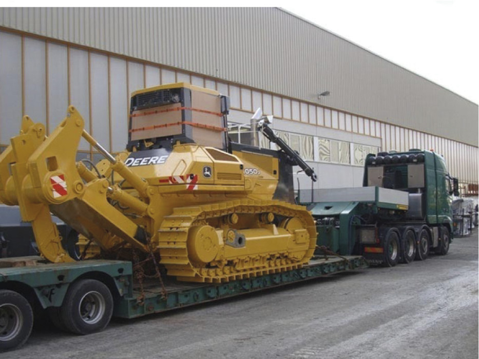

бурение
взрывные работы
экскавация
перевозка
дополнительные услуги
+7 (7212) 922-927
заказать звонок
Ремонт горного оборудования
1.
мониторинг состояния техники
2.
сервисное обслуживание
3.
капитальный ремонт компонентов
для выполнения профилактического ТО и ремонта техники организована сервисная служба с площадками для сервисного и технического обслуживания
Планирование и составление графиков ТО и Р с использованием программы MCS (Maintenance Control System);
Инспекция и диагностика состояния карьерной техники;
Проведение Технического обслуживания и ремонта горного оборудования;
Ремонт двигателей внутреннего сгорания;
Ремонт трансмиссии и ходовой части техники;
Ремонт топливных и гидравлических насосов;
Восстановительные работы с использованием расточно-наплавочного комплекса;
Передвижная ремонтная мастерская (ПАРМА).
Основные преимущества:
Обеспечение высокой технической готовности техники, при минимальных затратах;
Наличие большой номенклатуры запасных частей и компонентов, что влечет снижение возможных простоев техники;
Применение современных бизнес-процессов сервиса.
поставка компонентов и оборудования для
горно-металлургических предприятий

1.
буровой инструмент и буровые станки
2.
ковшевое оборудование
3.
расходные материалы и запчасти для горной техники
бытовые сервисы
1.
клининг производственных помещений
2.
организация проживания и питания на вахтовых поселках
3.
организация досуга на вахтовых поселках